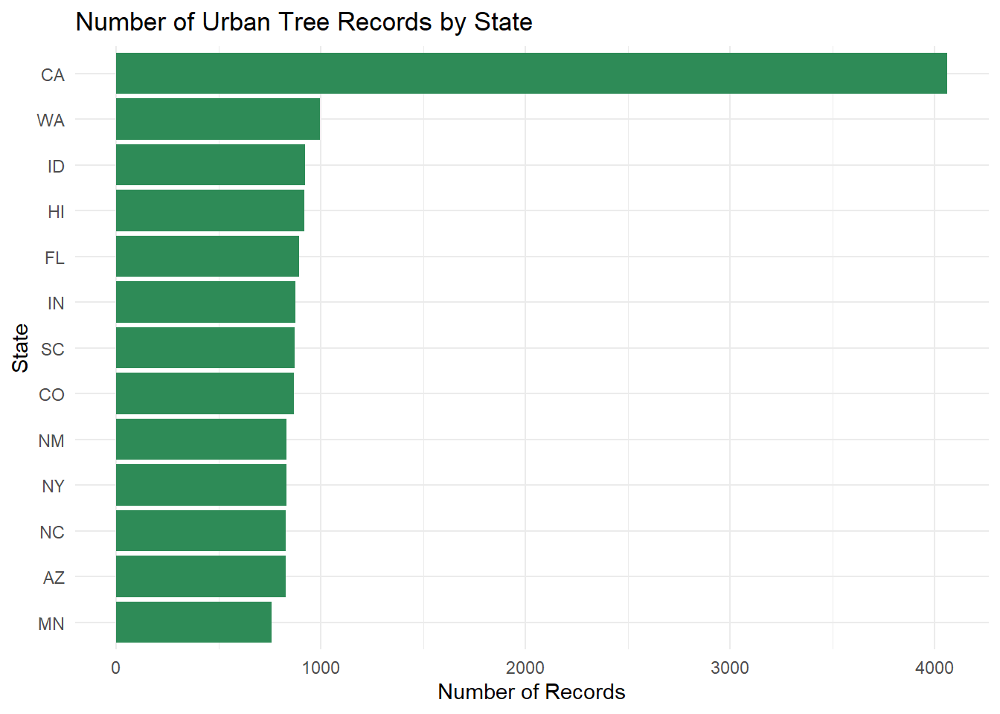
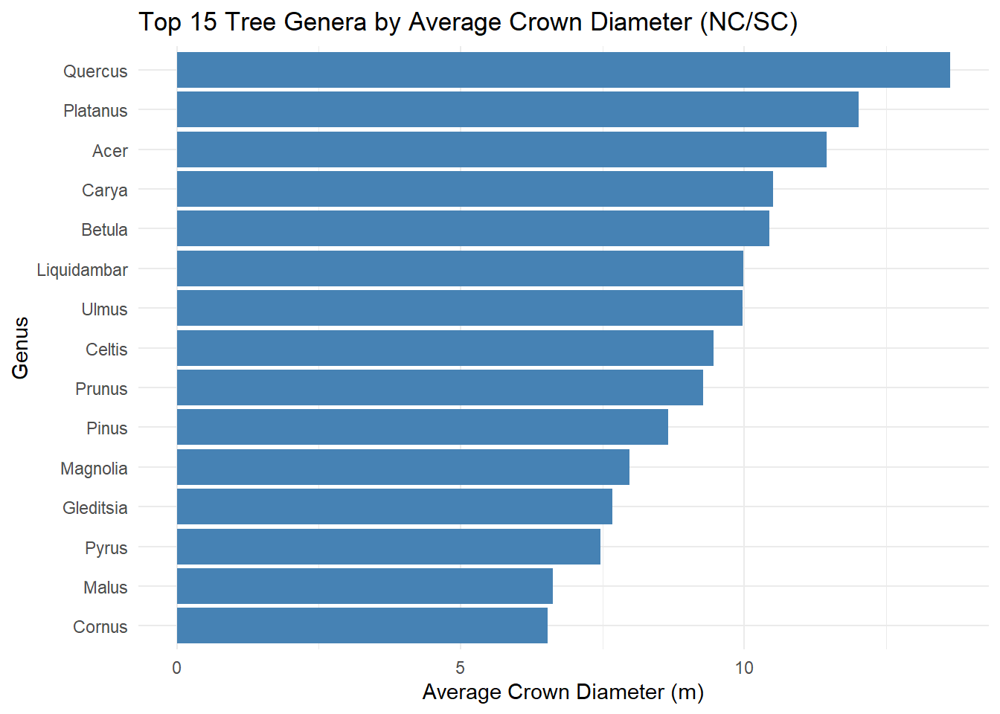
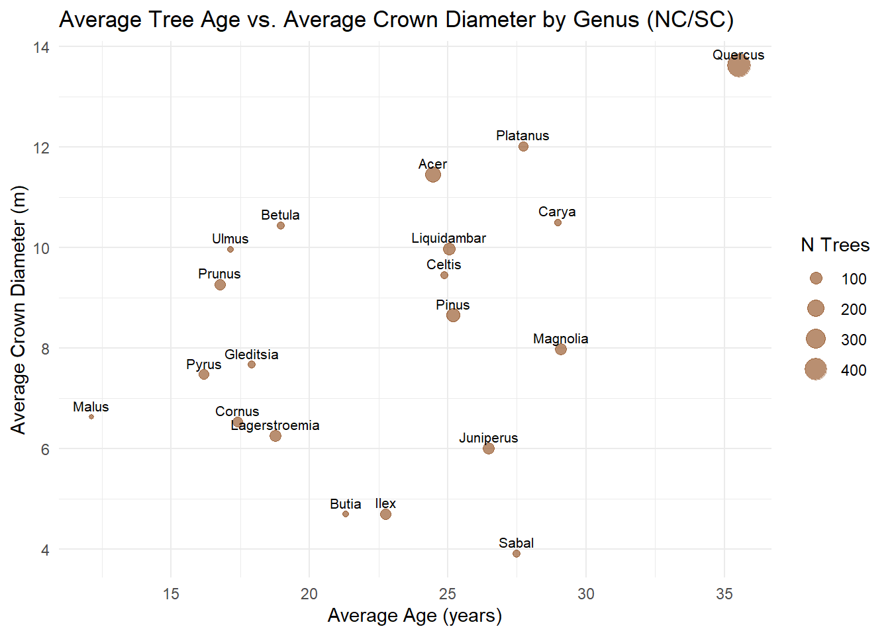
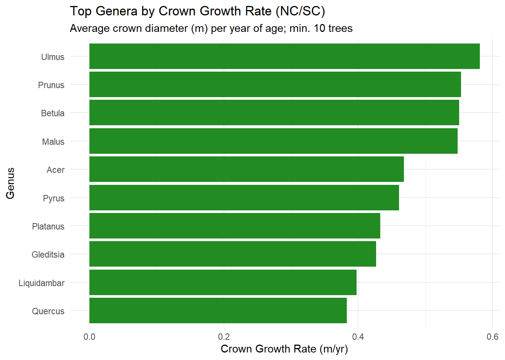

Rows: 14487 Columns: 41
── Column specification ────────────────────────────────────────────────────────
Delimiter: ","
chr (15): Region, City, Source, Zone, Park/Street, SpCode, ScientificName, C...
dbl (25): DbaseID, cell, Age, DBH (cm), TreeHt (m), CrnBase, CrnHt (m), Cdia...
num (1): TreeID
ℹ Use `spec()` to retrieve the full column specification for this data.
ℹ Specify the column types or set `show_col_types = FALSE` to quiet this message.
Question 1: Sample sizes by state
The City column contains both the city name and state abbreviation together, so I used a regular expression to split them into separate columns. The state abbreviation is always the last two uppercase letters, and the city name is everything before the comma.
trees <- trees |>mutate(city_name =str_trim(str_extract(City, "^[^,]+")),state_abbr =str_trim(str_extract(City, "[A-Z]{2}$")) )state_counts <- trees |>count(state_abbr, name ="n_records") |>arrange(desc(n_records))knitr::kable(state_counts, col.names =c("State", "Number of Records"),caption ="Number of tree records per state")
Number of tree records per state
State
Number of Records
CA
4062
WA
994
ID
923
HI
918
FL
895
IN
877
SC
872
CO
867
NM
833
NY
831
NC
828
AZ
827
MN
760
ggplot(state_counts, aes(x =reorder(state_abbr, n_records), y = n_records)) +geom_col(fill ="#2E8B57") +coord_flip() +labs(title ="Number of Urban Tree Records by State",x ="State",y ="Number of Records" ) +theme_minimal()

Question 2: Cities in NC/SC
Since the city wants data from North and South Carolina specifically, I filtered the dataset down to just those two states. All questions from here on use this filtered dataset.
trees_nc_sc <- trees |>filter(state_abbr %in%c("NC", "SC"))trees_nc_sc |>distinct(state_abbr, city_name) |>arrange(state_abbr, city_name) |> knitr::kable(col.names =c("State", "City"),caption ="Cities with tree data in NC and SC")
Cities with tree data in NC and SC
State
City
NC
Charlotte
SC
Charleston
Question 3: Genera with the largest crown diameter
Scientific names follow binomial nomenclature, so the genus is always the first word. I extracted it with a regular expression and then calculated the average crown diameter per genus to find which genus provides the most shade.
The genus with the largest average crown diameter is Quercus at 13.62 meters.
genus_crown |>head(15) |>ggplot(aes(x =reorder(genus, avg_crown_diam_m), y = avg_crown_diam_m)) +geom_col(fill ="#4682B4") +coord_flip() +labs(title ="Top 15 Tree Genera by Average Crown Diameter (NC/SC)",x ="Genus",y ="Average Crown Diameter (m)" ) +theme_minimal()

Question 4: Tree age by genus
Older trees naturally have more time to grow, so differences in average age between genera could explain some of the crown diameter differences we saw in Question 3. I calculated the average age and crown diameter for each genus to see if there is a pattern.
genus_age <- trees_nc_sc |>filter(!is.na(Age), Age >=0,!is.na(`AvgCdia (m)`), `AvgCdia (m)`>=0) |>group_by(genus) |>summarise(avg_age_yr =mean(Age, na.rm =TRUE),avg_crown_diam =mean(`AvgCdia (m)`, na.rm =TRUE),n =n() ) |>arrange(desc(avg_age_yr))genus_age |> knitr::kable(col.names =c("Genus", "Avg Age (yr)", "Avg Crown Diam (m)", "N Trees"),digits =2,caption ="Average age and crown diameter by genus (NC/SC)")
Average age and crown diameter by genus (NC/SC)
Genus
Avg Age (yr)
Avg Crown Diam (m)
N Trees
Quercus
35.55
13.62
449
Magnolia
29.10
7.98
82
Carya
28.97
10.51
36
Platanus
27.73
12.01
56
Sabal
27.50
3.92
38
Juniperus
26.49
6.01
82
Pinus
25.18
8.66
120
Liquidambar
25.04
9.98
93
Celtis
24.89
9.45
37
Acer
24.47
11.45
169
Ilex
22.76
4.71
71
Butia
21.31
4.70
32
Betula
18.97
10.44
39
Lagerstroemia
18.78
6.26
82
Gleditsia
17.92
7.67
37
Cornus
17.40
6.53
68
Ulmus
17.16
9.96
32
Prunus
16.76
9.27
75
Pyrus
16.19
7.47
70
Malus
12.10
6.63
29
ggplot(genus_age, aes(x = avg_age_yr, y = avg_crown_diam, label = genus)) +geom_point(aes(size = n), alpha =0.6, color ="#8B4513") +geom_text(vjust =-0.6, size =2.8, check_overlap =TRUE) +labs(title ="Average Tree Age vs. Average Crown Diameter by Genus (NC/SC)",x ="Average Age (years)",y ="Average Crown Diameter (m)",size ="N Trees" ) +theme_minimal()

There is a general positive relationship between age and crown diameter, so age does seem to partially explain the results from Question 3. That said, the relationship is not perfect, and some genera likely just grow faster or reach a larger size naturally.
AI Reflection
[Add a few sentences here describing any AI tools or outside resources you used (e.g. ChatGPT, Claude, StackOverflow), how you used them, and whether they supported your learning.]
Extra Credit
Genera recommendation: large crown, grown quickly
To find a genus that grows a large crown quickly, I divided average crown diameter by average age to get a rough growth rate. I only kept genera with at least 10 trees in the dataset since smaller samples are less reliable.
Top genera by crown growth rate (min. 10 trees, NC/SC)
Genus
Avg Age (yr)
Avg Crown (m)
Crown Growth Rate (m/yr)
N Trees
Ulmus
17.156
9.963
0.581
32
Prunus
16.760
9.268
0.553
75
Betula
18.974
10.438
0.550
39
Malus
12.103
6.631
0.548
29
Acer
24.619
11.516
0.468
168
Pyrus
16.420
7.564
0.461
69
Platanus
28.236
12.215
0.433
55
Gleditsia
18.417
7.856
0.427
36
Liquidambar
25.593
10.177
0.398
91
Quercus
35.789
13.710
0.383
446
genus_growth_rate |>head(10) |>ggplot(aes(x =reorder(genus, crown_per_yr), y = crown_per_yr)) +geom_col(fill ="#228B22") +coord_flip() +labs(title ="Top Genera by Crown Growth Rate (NC/SC)",subtitle ="Average crown diameter (m) per year of age; min. 10 trees",x ="Genus",y ="Crown Growth Rate (m/yr)" ) +theme_minimal()

Based on this, I would recommend Ulmus. It reaches an average crown diameter of 9.96 m in about 17.2 years, giving it a growth rate of 0.581 m/yr, the highest of any genus with at least 10 trees sampled in NC/SC.
Species extraction
The species is the second word in a scientific name, but there are a few edge cases to handle. Hybrid plants have an “x” between the genus and species that needs to be removed, cultivars add a name in quotes after the species, and some entries include a variety after the species (e.g. “var. silicicola”). The regex below handles all three cases by stripping the genus, removing any leading “x”, and then grabbing just the first remaining word.
trees_species <- trees |>mutate(genus =str_extract(ScientificName, "^\\S+"),species = ScientificName |>str_remove("^\\S+\\s+") |># remove genusstr_remove("^x\\s+") |># remove hybrid "x "str_extract("^\\S+") # first remaining word = species# (naturally drops 'var. ...' and quoted cultivars) )# Verify the regex handles the edge cases correctlytrees_species |>filter(str_detect(ScientificName, " x |'|var\\.")) |>distinct(ScientificName, genus, species) |>head(10) |> knitr::kable(caption ="Example extractions for complex scientific names")
Example extractions for complex scientific names
ScientificName
genus
species
Fraxinus angustifolia ‘Raywood’
Fraxinus
angustifolia
Fraxinus excelsior ‘Hessei’
Fraxinus
excelsior
Fraxinus pennsylvanica ‘Marshall’
Fraxinus
pennsylvanica
Fraxinus velutina ‘Modesto’
Fraxinus
velutina
Platanus x acerifolia
Platanus
acerifolia
Pyrus calleryana ‘Bradford’
Pyrus
calleryana
Bauhinia x blakeana
Bauhinia
blakeana
Cassia x nealiae
Cassia
nealiae
Conocarpus erectus var. argenteus
Conocarpus
erectus
Juniperus virginiana var. silicicola
Juniperus
virginiana
trees_species |>filter(!is.na(genus), !is.na(species),!species %in%c("sp.", "spp.")) |>group_by(genus) |>summarise(n_species =n_distinct(species)) |>arrange(desc(n_species)) |>head(20) |> knitr::kable(col.names =c("Genus", "Number of Species"),caption ="Number of species per genus in the full dataset (top 20)")
Number of species per genus in the full dataset (top 20)